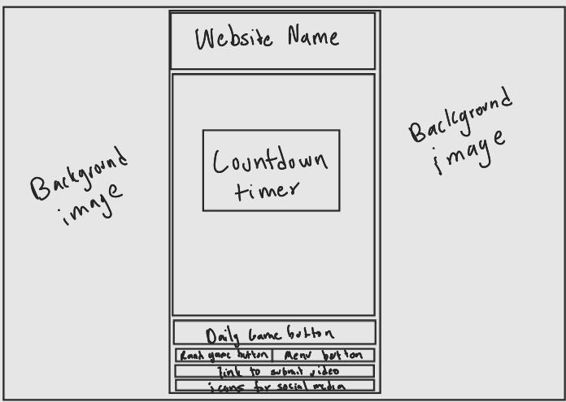

-
Using the favorite website you chose in homework 1, create a wireframe for one page of it using pen/paper, PowerPoint, or any your tool of choice. (use the 'img' tag!) Make sure to let us know what the name of your website is (Use the 'p' tag!)
https://www.explordle.com/
 -
Try to improve the website you've chosen, and create a redesigned wireframe of one page for the same website using the principles of visual hierarchy that you learned from the article.
-
What is the goal of the website? Who is it intended for? How does the design accomplish this? Write 2-3 sentences answering these questions. (Use the 'p' tag again!)
The goal of this website is to be entertaining as it is a game but can also be educational due to showing many parts of the world. It is intended for people who want to learn about different parts of the world but in a fun way. The design does this by being very simple and having the bare minimum in the front page allowing the user to get started with the game easily.
-
Write 2-3 sentences about what problems your redesign addressed, and how it solved them.
One issue with the current design is that due to its simplistic nature it makes it hard to keep playing the game after the daily adventure. By expanding the menu button to show some popular options it gives users other game options to explore and thus continue using the website. Furthermore, the timer I felt is important but didnt need to be as big as in the original since new users wouldnt necessarily understand what it meant and instead the start game button should be larger.
NOTE: Make sure to include the wireframe images in the website and don't just put it in your assets folder!
Your wireframes should look something like this: